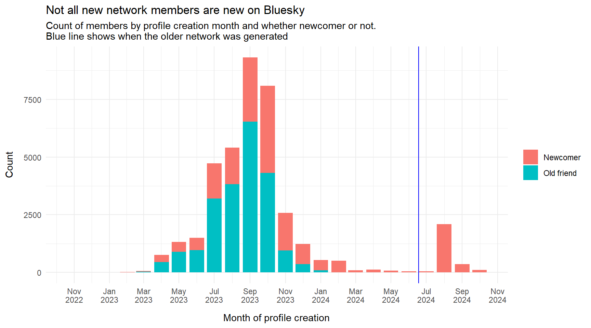
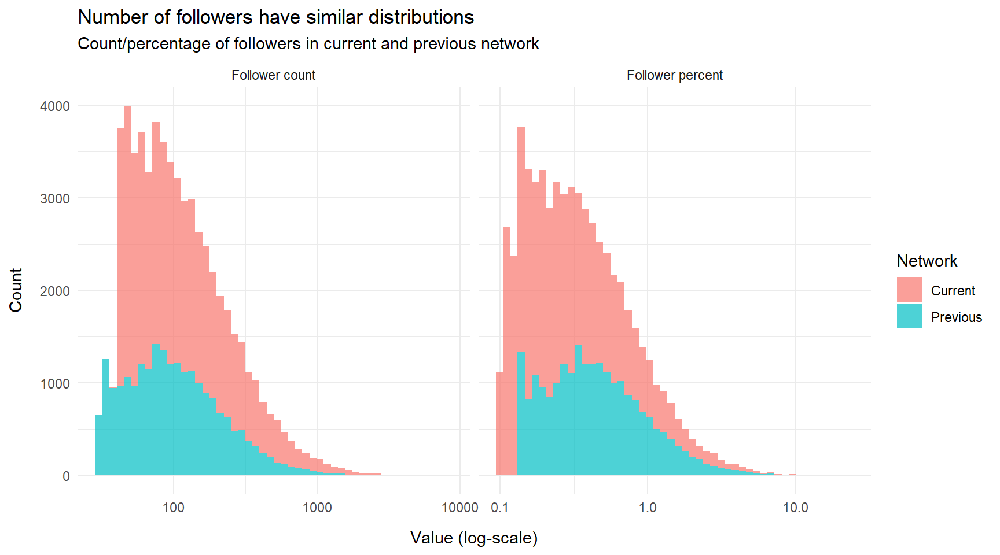
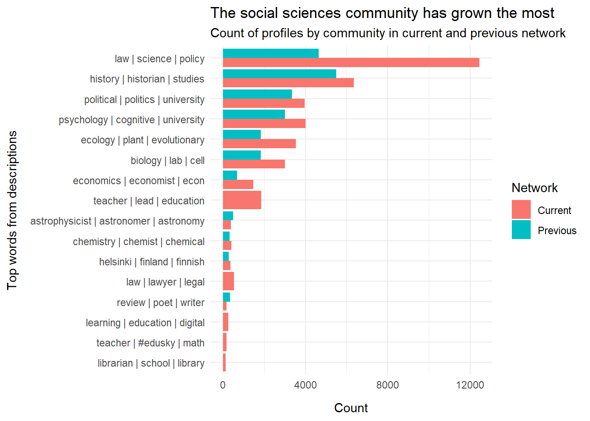

Compare Newer and Older Net
What is this?
This is a review of the latest update of the Bluesky Science and Research Network. We compare the current network with the previous one: How many new network members did we get; how many did we lose; what are some characteristics of the newcomers?
Counts
The current network, collected 2024-10-24, has 39030 members. The previous one, collected 2024-06-18, had 22255 members.
The net gain in members is thus 16775 which comes from 17393 newcomers minus 618 users that are no longer member of the research network.
The current net was was collected using a slightly different version of the algorithm, so it’s possible that some of the changes was because of that. Lost and gained members can also be due to some leaving or joining Bluesky, changes in descriptions, or in the connections between members.
Newcomers
From the profile information, we know when the profiles where created, so we can check if all or most the newcomers have been created after the first network was collected.
It seems that a significant chunk of the newcomers where created recently (most in August 2024) so that accounts for some of the increase, although not the major part.
Keywords
We added a bunch of new keywords, among other things to include the climate science field. Let’s check if that affected the number of members included in the science network.
The original keywords
academic, amanuensis, anthropologist, assistant, behavioral, biologist, biology, candidate, chemist, cognition, cognitive, computational, computing, doktorand, ecology, economy, education, engineer, english, ethicist, evolution, faculty, fellow, geoeconomics , geographer, geopolitics, historian, history, humanities, infectious , institute, law, learning, lecturer, linguist, michigan, neurologist, neuroscience, ph.d, phd, philosopher, philosophy, physicist, physics , policy, post-doc, postdoc, professor, psychology, research, scholar, school, science, scientist, student, studies, studying, teaching, universitet, university
Some keywords in the above list, like “academic”, are rather generic. The list was generated based on a statistical analysis of what words scientists or researchers on Bluesky was likely to include in their description. For that reason words like “Michigan” also made it to the list – and might be removed again.
The added keywords
adjunct professor, ai, art historian, artificial intelligence, behavioral economics, bioinformatics, biomedical, biotechnology, blockchain, cardiologist, chemical engineer, civil engineer, classics, climatologist, cognitive neuroscience, criminologist, cultural studies, cybersecurity, data scientist, dean, demographer, doctor, economist , electrical engineer, environmental engineer, epidemiologist, gender studies, geneticist, geologist, geophysicist, instructor, literary critic, machine learning, materials science, mechanical engineer, media studies, mentor, meteorologist, musicology, nanotechnology, neuroethics, oceanographer, oncologist, paleontologist, pharmacologist, philosophy of science, physician, political scientist, provost, psychiatrist, public health, quantum computing, religious studies, renewable energy, robotics, scicomm, science communication, social work, sociologist, surgeon, synthetic biology, theology, trainee, virologist
Note that some of these are two-word phrases that really are redundant, since one is already included above. For example, “adjunct professor” is already covered by “professor”. It doesn’t harm, but for clarity and brievity we could clean this up a bit.
Counting how many profiles matches the old and the new keywords (or both) we get:
| Matches old keyword | Matches new keyword | n |
|---|---|---|
| FALSE | FALSE | 6 |
| TRUE | FALSE | 28534 |
| TRUE | TRUE | 10490 |
We see that no profiles has a description that matches the new keywords without also matching the old ones.
Examples
Spot-checking for descriptions that contain “climatologist” we can look at the following descriptions:
| Handle | Description |
|---|---|
| thefosterlab.bsky.social | Palaeoclimatologist and isotope geochemist at the University of Southampton. Love/hate relationship with mass spectrometers. Researcher of climate science, coral reefs, biomineralisation, laser ablation, isotopes and geology. Views my own |
| agroclim.bsky.social | (he/him) Agroclimatologist studying climate and food. Assistant research scientist working with FEWS NET and NASA Goddard at the Earth System Science Interdisciplinary Center at the University of Maryland |
| thirstygecko.bsky.social | Climate scientist, paleoclimatologist, dendrochronologist, Professor of Earth Systems Geography, University of Arizona | https://kanchukaitis.github.io/ | Opinions are mine and not that of my employer |
| baichner.bsky.social | Geoecologist, environmental chemist, paleoclimatologist, bassist. // Landesamt für Umwelt Brandenburg. Hier privat. https://tinyurl.com/45chtc2p https://tinyurl.com/4j2ydmzx. // Berlin & Niederbayern. // Posts in English und auf Deutsch. |
| prehistormic.bsky.social | Assistant professor & paleoclimatologist @ClemsonUniversity. Paleohurricanes, paleoclimatology, modern TCs, & coastal hazards. Multiproxy. Ultimate. Beer. Ecosocialist. Hispanohablante también. ADHD. He/Him. |
| aprilabbott.bsky.social | Geochemical Oceanographer / Paleoclimatologist; Assistant Prof of Marine Science; tweets my own; she/her |
| thomasfelis.bsky.social | Coral archives | Past, present & future climate & environmental change | Paleoclimatologist/paleoceanographer at MARUM/University of Bremen | Coordinator DFG SPP 2299 https://www.marum.de/en/about-us/Coral-Paleoclimatology.html |
| aecpaleo.bsky.social | Archaeologist, paleo-ecologist/climatologist. Postdoc CEPAM, PhD Cornell. I use lipid biomarkers, pollen, and charcoal to study human-environment interactions in grasslands. Former UNIX SysEng, RAWarrior. |
| celiavarves.bsky.social | Palaeoclimatologist, Investigating DECADAL Holocene climate variability and its impact on climate policy UKRI-FLF www.palaeodecadal.org |
| eleniwater.bsky.social | paleoceanographer, paleoclimatologist and biogeochemist at GEOMAR, Kiel, opinions my own |
| michaelhenehan.bsky.social | Lecturer at the School of Earth Sciences, University of Bristol. Isotope geochemist/palaeoclimatologist/micropalaeontologist.. Like politics, music and West Ham. Not a fan of cloves. Or Elon Musk. |
| antacl.bsky.social | Paleoclimatologist & modeler. Scientific interest vary with seasons 🌏🌧️⛰️🏝️🐒🐠🌱| Postdoc @ U. Oregon | 🧗🏾♀️| 🇫🇷 in 🇺🇸 |
| geochem-nicole.bsky.social | Postdoc, paleoclimatologist (organic geochemistry, biomarker) at University of Hamburg #CLICCS. Views are my own. |
| drbendlej.bsky.social | Organic Geochemist, Palaeoclimatologist, crossing into Speleology and Archaeology 🕳️🪨⛰️⚒️🚴☕️ 🇪🇺. |
| utmpaleolab.bsky.social | Paleoclimatologist & Associate Professor at University of Toronto Mississauga. https://utmpaleolab.wordpress.com/ |
| tommarchitto.bsky.social | Paleoceanographer and paleoclimatologist, University of Colorado Boulder |
| daymelo.bsky.social | Marine Scientist 🌊 | Paleoclimatologist and a fan of many random things Cientista do Mar 🌊 | Paleoclimatologista e fã de um monte de coisa PhD student - IGc USP ⚒️ |
| alexauderset.bsky.social | Anniversary Fellow at University of Southampton | Paleoclimatologist | Foram-bound d15N & d13C | Biomarkers | Cenozoic climate | Foram ecology | GO VEGAN! |
Distributions
What are the distributions of followers in the new/old network? Below, we plot the distribution of followers, in absolute numbers (left) and as a percentage of all network members (right). Both metrics are split by network: The smaller, older one and the newer, bigger one.

We note that the distributions are highly right-skewed, with a few profiles having very many followers. Also, since we increased the inclusion threshold from 30 to 40, the previous network has few more profiles at the low end of the scale. But since the current network is bigger, it has more members with a low number of followers when expressed as a percentage.
We can look at some summary statistics to be more precise:
| Network | Metric | Min. | 1st Qu. | Median | Mean | 3st Qu. | Max. |
|---|---|---|---|---|---|---|---|
| Current | Follower count | 39.00 | 61.00 | 99.00 | 170.49 | 188.00 | 8281.00 |
| Current | Follower percent | 0.10 | 0.16 | 0.25 | 0.44 | 0.48 | 21.22 |
| Previous | Follower count | 30.00 | 55.00 | 92.00 | 140.13 | 162.00 | 5158.00 |
| Previous | Follower percent | 0.13 | 0.25 | 0.41 | 0.62 | 0.72 | 22.99 |
For example, the median number of followers for members of the current is 99. Half has below that number of followers, the other half above.
It’s a little surprising that some members of the current network only has 39 followers, since we set the threshold at 40. It could be due to rare circumstances, when a member is included with 40 followers, but one of those followers is later excluded.
Indeed, looking at the actual counts, 40+ is much more common than 39:
| Network | Metric | Value | Count |
|---|---|---|---|
| Current | Follower count | 39 | 4 |
| Current | Follower count | 40 | 534 |
| Current | Follower count | 41 | 573 |
| Current | Follower count | 42 | 595 |
| Current | Follower count | 43 | 530 |
While we’re at it, let’s check some of the extremely high values, to see if they are actually relevant network members (as opposed to some media or institutional profiles).
| Handle | Description | Followers count | Total followers | Posts count |
|---|---|---|---|---|
| edyong209.bsky.social | Writer, journalist. Science, health. Pandemics, animals. Birder, photographer. Many words, some awards. AN IMMENSE WORLD, I CONTAIN MULTITUDES. Married to Liz Neeley, parent to Typo. he/him 📷 Canon R6mkii + RF 800mm Edyong.me | 8281 | 91465 | 1153 |
| carlbergstrom.com | Biology professor at the University of Washington. I study how information flows in biology, science, and society. I wrote a book: *Calling Bullshit*: http://tinyurl.com/fdcuvd7b I love ravens and crows: https://tinyurl.com/mr2n5ymk he/him | 7394 | 51448 | 4715 |
| astrokatie.com | Cosmologist, pilot, author, connoisseur of cosmic catastrophes. @TEDFellow, CIFAR Azrieli Global Scholar. She/her. Dr. | 6396 | 109955 | 5942 |
| kevinmkruse.bsky.social | Historian: White Flight; New Suburban History; Fog of War; One Nation Under God; Fault Lines; Voter Suppression; Myth America. CAMPAIGN TRAILS: KevinMKruse.Substack.com | 5218 | 81554 | 15400 |
| rossdahlke.bsky.social | PhD Candidate @ Stanford & Stanford Data Science | Incoming Assistant Prof. UW-Madison School of Journalism & Mass Communication | 4962 | 7980 | 277 |
| kris-inwood.bsky.social | Economic historian @UoGuelph w broad social science & historical interests: population health, First Nations demography, mobility, inequality & lives of the incarcerated. 🇨🇦🇦🇺🇳🇿🏴 Editing Social Science History & Asia-Pacific Econ History | 4370 | 6812 | 224 |
| olufemiotaiwo.bsky.social | political philosopher at Georgetown University. rhythm guitarist + vox for Femi and the Foundation. Spurs fan #COYS | 4227 | 30496 | 5615 |
| katharinehayhoe.com | climate scientist and professor, Texas Tech chief scientist, The Nature Conservancy board member, Smithsonian NMNH alum, UToronto and UIUC author, Saving Us 🧶📖❄️🐈 are my favorite things TX is where I live and 🇨🇦 is my home Posts 100% my own | 3914 | 25069 | 2755 |
| laurahelmuth.bsky.social | Editor in Chief of Scientific American, @sciam.bsky.social Formerly at Washington Post, National Geographic, Slate, Smithsonian, Science. Past prez National Association of Science Writers. Birder | 3848 | 22652 | 1445 |
| kjhealy.bsky.social | Social science and other distractions. https://kieranhealy.org / https://theordinalsociety.com | 3751 | 11958 | 2841 |
The list does seem to contain valid members of the science and research network that just happens to have a lot of followers. Note that we included also the total number of followers, i.e. from profiles outside the network, as well as the count of posts. We see that those popular profiles tend to be very active and also popular outside the network. Not surprisingly, there are quite a bit of journalists, writers, and speakers in this select group.
Communities
Finally, let’s examine if the distribution of the communities changed. The “communities” are parts of the network that has a particular high density. They are detected using an algorithm, and they often align roughly with different academic fields.
It’s a little difficult to compare communities across networks, because the algorithm just assigns an arbitrary number to label profiles that are in the same community. A label of \(3\) in the previous network does not have anyting to do with a label of \(3\) in another network. But we can roughly map the two sets of communities: If profiles that used to be in community \(3\) are now mostly in community \(7\) we can assume they are similar (people don’t change academic fields that often).
In order to label the communities with something a little more descriptive, we take the top most frequent words from the profile description in each community. (To discount very frequent words, we use weighted frequencies, specifically “term frequency–inverse document frequency”).
A plot of the distribution of communities in the previous and the current network:

Almost all communities are bigger than before since the whole network has grown. We note that in particular the “law | science | policy” community has grown by a lot.
To finish off, below are samples of influential profiles from each of the communities. Recall that each profile does not necessarily has the words from the community label in its description; the labels describe the community as a whole.
| Handle | Description | Community label | Total followers |
|---|---|---|---|
| drtlovesbooks.bsky.social | School Libraries are the cure for what ails education! | M.Ed., Ed.D., M.I. | 25 yr vet Tchr | he/him | Lots o' SLMS stuff @ http://SchoolLibLearning.net | librarian | school | library | 1077 |
| reading2learn.bsky.social | School Librarian-Wife-Mom-Educator-Tech-Books. #tlchat #digcit #mglit #futurereadylibs #istelibs #aasl #ncte #elachat #ELLs🌈ally #WeNeedDiverseBooks ☮️ | librarian | school | library | 487 |
| mstewartscience.bsky.social | Writes science books for kids. Cares deeply about literacy and science education. Nonfiction advocate. She/her https://melissa-stewart.com | librarian | school | library | 1241 |
| bibliobeth.bsky.social | Middle school librarian | librarian | school | library | 296 |
| tljamesa.bsky.social | School Libraries https://www.tljamesa.com/ GEI TOR16 #TLChat #KyLChat #stressdoodle #KyGoPlay previously k-12 School Librarian | librarian | school | library | 370 |
| sherylplace.bsky.social | Educator • Head of Customer Success at BookWidgets • Educators & Education • Exploring National Parks • ISO great bourbon • Michigan State University • Miami Hurricanes 🙌🏼 • 🍎 • she/her • #edtech #teaching #EDUsky https://www.bookwidgets.com | teacher | #edusky | math | 560 |
| kathyhen.bsky.social | Math teacher, @Desmos certified presenter, Desmos Fellow, @onepeloton enthusiast #mtbos #iteachmath Berkeley, CA | teacher | #edusky | math | 560 |
| larryferlazzo.bsky.social | High School teacher, author, Education Week teacher advice columnist | teacher | #edusky | math | 611 |
| zentangler.bsky.social | We can do hard things. Online teacher, #ELE and #ELL teacher, graduate student, admin-in-training. I zentangle, crochet, Minecraft & sing. She/her #alwayslearning #EDUsky | teacher | #edusky | math | 337 |
| monicaloryn.bsky.social | (she/her) Neuroscience educator focused on inclusive and equity-minded pedagogy. Interested in improving assessments and assessment feedback. | teacher | #edusky | math | 189 |
| topangahippie.bsky.social | NEA poetry fellow| CantoMundo |Fulbright | Author of four poetry books: Quarantine Highway (FlowerSong), Thru a Grainy Landscape, Injuring Eternity, and Only More So (Salmon) https://MillicentBorgesAccardi.com | review | poet | writer | 1268 |
| hanvanderhart.bsky.social | Hollis Summers Poetry Prize: Larks (Ohio U Press, 2025). What Pecan Light (BCP, 2021). Editor: @riverriverbooks.bsky.social & @moistpoetryjournal.bsky.social Host: @ofpoetrypodcast.bsky.social Southern. PhD Duke. they/them. Durham, NC. 🏳️⚧️🏳️🌈 hanva | review | poet | writer | 1720 |
| demisty.bsky.social | Mother of twins, wife of dude, writer of stuff, prof. of student, PhD. Website at demistybellinger.com. All Daughters Are Awesome Everywhere is forthcoming from Nebraska Press: Zero Street Fiction, Sept 1, 2024! | review | poet | writer | 1119 |
| amorak.bsky.social | Loyola dad. BGSU dad. Poet. Editor. BGSU professor & proud union member. Auburn fan. He/him. It's pronounced uh-MOR-ack. https://amorakhuey.com | review | poet | writer | 1226 |
| robmclennan.bsky.social | poet, fiction writer, publisher, critic, papa, etc. this fall: On Beauty: stories, (University of Alberta Press) https://robmclennan.blogspot.com/ https://www.patreon.com/robmclennan http://robmclennanauthor.blogspot.com/ https://robmclennan.substack.com/ | review | poet | writer | 1651 |
| kjhaxton.bsky.social | Chemistry Education particularly social justice and equity, sustainability, and mini-problem based learning. Academic surviving/striving/thriving in English Higher Education. Blog: https://kjhaxton.com/ | learning | education | digital | 655 |
| suebecks.bsky.social | Associate Professor | National Teaching Fellow | CMBE | SFHEA | FSEDA | Sheffield Hallam University | Social Media Researcher #TEDxSpeaker @suebecks @LTHEchat @SocMedHE socialmediaforlearning.com LinkedIn.com/in/Suebeckingham | learning | education | digital | 803 |
| drcathyelliott.bsky.social | Vice Dean Education in UCL Social and Historical Sciences Faculty. SFHEA. Regular contributor to ALPS blog. Co-convenor PSA Teaching and Learning Network. Co-Director UCL Centre for the Pedagogy of Politics. Politics of pedagogy and nature. | learning | education | digital | 515 |
| samfordsaunders.bsky.social | Educational Developer at the University of Liverpool: assessment and feedback, academic integrity, curriculum design, and (sceptical thoughts on) Generative AI. PhD: English, LJMU (2018) C19 crime fiction. SFHEA. He/him. | learning | education | digital | 597 |
| gamerlearner.bsky.social | Ed tech and eLearning guy, convenor of @TELedvisors SIG, PhD candidate USyd SFHEA He/Him Opinions are mine. @gamerlearner@aus.social Newsletter Sign up @ http://bit.ly/edtechmustreads | learning | education | digital | 547 |
| janierola.net | Sociology prof studying intergenerational inequalities, the captain of INVEST Research Flagship Centre at University of Turku, Finland. Or sailing otherwise the Baltic #newwelfarestate. https://janierola.net https://invest.utu.fi http://mapineq.eu | helsinki | finland | finnish | 2804 |
| tiedetati.bsky.social | Tante Laura, a research enthusiast Classicist at Tampere University #ancienthistory #classics Tieteestä intoileva antiikintutkijatäti. she/her | helsinki | finland | finnish | 1145 |
| pjonkerhoffren.bsky.social | Sociologist, ReCreator, sound organizer. Working at the Work Research Centre of Tampere University, in the #ReCreate project (www.recreate-project.eu) Interested in labour market issues, circular economy and broader society. Cat person. My passion: music | helsinki | finland | finnish | 716 |
| juhalipponen.fi | Professor of practice, Bioproduct Technology Aalto University & XAMK. Innovation professional, 30yrs R&D and project experience. In a quest of saving the Earth with the awesome properties of biomaterials. https://www.linkedin.com/in/juhalipponen/ | helsinki | finland | finnish | 1170 |
| waeiski.bsky.social | 🧑🎓 PostDoc in #geography interested in #UrbanMultilingualism, #UrbanDiversity, #mobility, #SpatialAnalysis & #BigData. Currently at Uni. Helsinki. 🌍 Helsinki, Finland. https://waeiski.github.io | helsinki | finland | finnish | 539 |
| cosmicrami.bsky.social | Astronomer, driving The Dish📡 to study pulsars in my PhD. Also, founded SpaceAustralia.com. Also, love a bit of astrophotography. Also, do everything with my little mate, Max. Also, Ultra-Gay. He/Him. | astrophysicist | astronomer | astronomy | 5029 |
| planet4589.bsky.social | Astrophysicist | astrophysicist | astronomer | astronomy | 5987 |
| sarahkendrew.bsky.social | European Space Agency Astronomer at the Space Telescope Science Institute in Baltimore, MD. Leading the science operations team for the MIRI instrument on JWST. Runner, dog mum, cyclist. 🇬🇧🇧🇪 Opinions my own. | astrophysicist | astronomer | astronomy | 2014 |
| aussiastronomer.bsky.social | Caltech/IPAC Planet Hunter | Chief Scientist NASA Exoplanet Science Institute | @TEDFellow | Science consultant | General Nerd | My views are not the views of NASA | She/her | astrophysicist | astronomer | astronomy | 6666 |
| astrokiwi.bsky.social | Planetary astronomer @UCNZ: envisioning worlds from here and elsewhere, in a dark & glorious sky. Rutherford Discovery Fellow. Asteroid (10463). Pākehā; she | astrophysicist | astronomer | astronomy | 2759 |
| heydebigale.bsky.social | Chemist, 🧲 spectroscopist, mother, Associate Teaching Prof. of Chemistry at University of Denver. Bullet journaling 📒, loves reading 💖📚, currently writing a narrative nonfiction book on spectroscopy🚨 | chemistry | chemist | chemical | 2408 |
| stuartcantrill.bsky.social | Husband, Dad, pedant, former Chief Ed of Nature Chemistry, currently Editorial Director at Nature Portfolio. Gin, vin jaune, chemistry, publishing, words & snark. Views ranty, but all mine. #ContaminatedBlood victim (affected). He/Him. | chemistry | chemist | chemical | 1371 |
| alex94.bsky.social | Am a Chemist and a Shitō-ryū Karateka.I love dogs, Espionage movies and take each day at a time. | chemistry | chemist | chemical | 1648 |
| jakeyeston.bsky.social | Editor at Science Magazine, shepherding chemistry papers; views here are my own; he/him | chemistry | chemist | chemical | 1208 |
| supersciencegrl.co.uk | Digital chemist & chemistry automation nerd | Lives in a historical canalside cottage | "Aggressively sciency" | Views are mine | She/they. Macclesfield, UK | chemistry | chemist | chemical | 1253 |
| lawprofblawg.bsky.social | Accept no substitute. "Silly lawn gnome of ignorance" Mastodon: @lawprofblawg@mstdn.social. Twitter: @lawprofblawg "Living legend." Law Professor. | law | lawyer | legal | 3125 |
| lexlanham.bsky.social | law professor teaching & writing about trademark, false advertising, IP, & entertainment law at northeastern | law | lawyer | legal | 1689 |
| andrewkjennings.com | Corporate/securities law professor, Emory University; Host, Business Scholarship Podcast (@busscholarship.bsky.social) https://andrewkjennings.com | law | lawyer | legal | 1038 |
| anthonymkreis.bsky.social | Law professor and political scientist at Georgia State University College of Law. Studying constitutional law, American Political Development, the United States Supreme Court, civil rights, and the law of democracy. 🏳️🌈 📍 Atlanta, Georgia | law | lawyer | legal | 3830 |
| jdmortenson.bsky.social | University of Michigan law professor. Legal historian. Constitutional litigator. Writing a book on executive power in early America. Frazzled dad. Probably kidding. Faculty bio at http://bit.ly/jdm-bio | law | lawyer | legal | 1861 |
| aaronsojourner.org | Labor economics @upjohninstitute.bsky.social & IZA. Former senior economist for labor at White House CEA. Minneapolis. Views mine. aaronsojourner.org Be kind • Work hard • Have fun | economics | economist | econ | 5385 |
| undercoverhist.bsky.social | Historian of applied economics (macro, public, urban, ag, env, design, tractability, computational econ & more) CNRS & CREST, Ecole Polytechnique | economics | economist | econ | 3160 |
| o.simardcasanova.net | · French Organizational Economist, en 🇫🇷 and in 🇺🇸 · Research Associate at CEREFIGE / @univlorraine.bsky.social · Workplace Behaviors, Meta & Open Science, #Rstats, Social Media & Disinformation, Public Transit, SciCom · https://www.simardcasanova.net | economics | economist | econ | 4241 |
| mclem.org | Professor of economics at George Mason University, fellow at the Peterson Institute of International Economics. Personal views exclusively. Erdős number = 4. http://mclem.org | economics | economist | econ | 3520 |
| johanneshaushofer.com | Economist at NUS Singapore and Stockholm University. Founder @malengo.org and Busara Center. Also Jain Family Institute, Max Planck Institute for Collective Goods. johanneshaushofer.com | economics | economist | econ | 2698 |
| jojophysicsgirl.bsky.social | ITE assistant prof 👩🎓 Primary teacher EYFS to Y6 👩🏫 Secondary (physics) 💫 Engineer👩⚕️ Well-being of trainee teachers 🧚🏻♂️ First generation at uni 🙋🏼♀️ Anything physics, but love space🔭 mum👨👩👧👦 views mine, always learning | teacher | lead | education | 2946 |
| edusky.bsky.social | Celebrating and supporting #EduSky posts to build an education community across Bluesky 👋🏻 | teacher | lead | education | 5035 |
| freereed59.net | Teacher Education. History. Trad music. #HistoryEducation #TeacherEducation #UKteaching #SSChat 📒🕰🎓🗺 https://intheoryandinpractice.wordpress.com/2023/04/11/and-then-the-bell-rang/ | teacher | lead | education | 2292 |
| phoenixedsarah.bsky.social | President PRUsAP |Author All About SEMH, Behaving Together :A Teacher's Guide to Nurturing Behaviour |Works in behaviour, mental health, AP, PRU & hospital education | Trustee|🐈, DnD⚔️, MtG, fossils, 🦅, 🏰, travelling |Mum to 4 girls | teacher | lead | education | 2331 |
| missymusician81.bsky.social | Doing an MSc EdPsych, AP Educator, 20+ years teaching, actually ADHD, child therapist, musician, artist, cat lover, blog writer | teacher | lead | education | 2077 |
| elisabethbik.bsky.social | Science integrity consultant and crowdfunded volunteer, PhD. Previously at Stanford University and (gasp!) uBiome. NL. USA. #ImageForensics. @MicrobiomDigest on the bird app. Blog: ScienceIntegrityDigest.com Support me: https://www.patreon.com/elisabethbik | biology | lab | cell | 9869 |
| phylogenomics.bsky.social | Prof. at UC Davis Work: microbiomes, genomics, evolution, ecology, symbioses, open science, STEMDiversity Lab: phylogenomics.me Pics: jonathaneisen.smugmug.com Blog: phylogenomics.blogspot.com Links: linktr.ee/jonathaneisen Ted talk: go.ted.com/6yg5 | biology | lab | cell | 6032 |
| albertvilella.bsky.social | Bioinformatics Scientist / Next Generation Sequencing / Single Cell and spatial biology / Next Generation Proteomics / Liquid Biopsy/ SynBio / Compute Acceleration // http://albertvilella.substack.com | biology | lab | cell | 2993 |
| cyrilpedia.bsky.social | I've worked on all of science, from T cells to B cells. https://fellowsherpa.com | biology | lab | cell | 2246 |
| graveolens.bsky.social | Mathematics Sorceror (sensory alchemist) at the Arctangent Transpetroglyphics Algra Laboratory (ATAL), I transmute mathematics into living rainbows. http://owen.maresh.info https://github.com/graveolensa | biology | lab | cell | 1190 |
| jchrispires.bsky.social | Professor passionate about student success and team science #firstgen #Brassica enthusiast walking with Dogs of the Plant World Following the #Science exodus from the other place | ecology | plant | evolutionary | 4340 |
| skwinnicki.bsky.social | Scientist studying bird parental care, development, and hormones | recent PhD at University of Illinois at Urbana-Champaign, MSc Kansas State | science communication/advocacy | birding and nature photography |they/them | sarahwinnicki.com | ecology | plant | evolutionary | 4857 |
| stephenbheard.bsky.social | Evolutionary ecologist & Boggle aficionado. Author: The Scientist's Guide to Writing; Charles Darwin's Barnacle and David Bowie's Spider. He/him. Blog and book links: scientistseessquirrel.wordpress.com | ecology | plant | evolutionary | 2135 |
| omearabrian.bsky.social | I study diversification, species delimitation, trait evolution & similar questions, often using new methods. Also random coding projects. College prof living in Oak Ridge, TN, USA. He/Him | ecology | plant | evolutionary | 1510 |
| jopabinia.bsky.social | Why things evolve into crabs. PhD evolutionary biologist (species alive today AND fossils, and how to study them together). Canadian at Harvard (she/her) My science: https://scholar.google.com/citations?user=CKqoVjEAAAAJ&hl=en | ecology | plant | evolutionary | 4577 |
| elizabethbitmeehan.com | GWU PhD doing transparency, illicit finance, business & interest group politics, and polisci metascience. Run @apsa.bsky.social DDRIG. Always a Midwest Princess 👑 | political | politics | university | 2859 |
| pengzell.bsky.social | Sociology prof at UCL Social Research, Associate Editor RSSM & ESR. Researches nepo babies. Previously at Swedish Institute for Social Research, Nuffield College, Oxford Demographic Science, MIT Sloan. http://perengzell.com | political | politics | university | 3133 |
| victorasal.bsky.social | UAlbany professor Studies insurgency/ terrorism & Ethnic & LGBTQ Discrimination & Pedagogy. | political | politics | university | 2017 |
| sgadarian.bsky.social | Professor, Political Science | Syracuse University, Maxwell School | American politics, political psychology | Co-author of Anxious Politics and Pandemic Politics | political | politics | university | 3131 |
| miriamjanderson.bsky.social | Associate Professor of IR | Toronto Metropolitan University | Visiting Fellow, Centre for Women, Peace, Security, LSE | Peace Negotiations, Peace Activism, Politics in Exile | Books - Windows of Opportunity (OUP 2016) Trnsn’l Actors in War&Peace (GUP 2017) | political | politics | university | 1807 |
| annaciaunica.bsky.social | Philosopher / Cognitive Scientist working on self consciousness and social interactions in humans and artificial agents/ Embodiment/ AI / Art & Science In Lisbon & London | psychology | cognitive | university | 3735 |
| matthewbroome.bsky.social | Director, Institute for Mental Health, and Chair in Psychiatry and Youth Mental Health, University of Birmingham. Interested in psychosis, youth mental health, philosophy, phenomenology. NHS Consultant Psychiatrist in Early Intervention in Psychosis. | psychology | cognitive | university | 3037 |
| micahgallen.com | Professor of Computational Neuroscience and Psychiatry, Aarhus University. PI @ the Embodied Computation Group. We study perception 👀, interoception 🫁🫀 ↻ 🧠, & metacogniton 🤔. https://www.the-ecg.org | psychology | cognitive | university | 4295 |
| markrubin.bsky.social | social psychology ▪︎ metascience ▪︎ philosophy of science ▪︎ higher education Professor at Durham University, UK. He/him. Website: https://sites.google.com/site/markrubinsocialpsychresearch/ Substack: https://markrubin.substack.com/ | psychology | cognitive | university | 5996 |
| lauraskh.bsky.social | Australian law and language scholar, UNE. Affiliated external member, CESSMIR, UGent. Asylum & migration procedures, disability, legal education & practice, access to justice. ENG, FR, ES, IT, اردو, پښتو | psychology | cognitive | university | 2670 |
| thetattooedprof.bsky.social | Educational developer, writer, historian, abolitionist | Higher ed, critical pedagogy, technology & teaching, sports, some 18th-19th c. history as a treat | Wrote: https://wvupressonline.com/node/823 | Will gladly pay you Tuesday for a hamburger today | history | historian | studies | 9265 |
| 08mikowitsch15.bsky.social | Historian/Archaeologist; #museum & #SocialMedia - head of visitor service and events @unesco Roman Monuments Augusta Treverorum formerly: DASA Arbeitswelt Ausstellung Dortmund - Museum Karl Marx Haus Trier | history | historian | studies | 3174 |
| nelbetancur.bsky.social | art & architectural historian / visual, material & religious culture • 17th and 18th century studies • assistant professor • mountain lover | history | historian | studies | 1925 |
| wokestudies.bsky.social | Prof. Demeritus. English Language and Literature. Shakespeare addict. Woke theory and practice. Queer history. Monstrosity. Novel: Class and Cloister: the St Andrews Correspondence. https://linktr.ee/drianmccormick | history | historian | studies | 2031 |
| afabregastejeda.bsky.social | Mexican Historian & Philosopher of Biology • Postdoctoral Fellow at KU Leuven • Book Reviews Editor for the Journal for General Philosophy of Science (@jgps.bsky.social) #PhilSci #HistSci #philsky • Escribo y edito • https://www.alejandrofabregastejeda.com | history | historian | studies | 2477 |
| easterncoyote.bsky.social | Trauma survivor. Quiet. Nocturnal. | Following scientists & nature people to create feeds. | Wildlife, ecology/conservation/biodiversity, plants, trees, canids, corvids, coffee, cats. They/them. Alter-ego: @horrorculturist.bsky.social | law | science | policy | 18826 |
| drfingerstyle.bsky.social | Classical guitarist, recording artist, music educator, musicologist (PhD), Classical/Pop Int. Examiner 🎸💿🔎🎶 Follow me on 👇 YouTube: youtube.com/@FrancescoTeopini IG: instagram.com/francesco_teopini Spotify: https://open.spotify.com/artist/3mOYZ1urMzWb | law | science | policy | 25745 |
| kris-inwood.bsky.social | Economic historian @UoGuelph w broad social science & historical interests: population health, First Nations demography, mobility, inequality & lives of the incarcerated. 🇨🇦🇦🇺🇳🇿🏴 Editing Social Science History & Asia-Pacific Econ History | law | science | policy | 6812 |
| conradhackett.bsky.social | Demography nerd at Pew Research Center Global religious change, sociology | law | science | policy | 8037 |
| lassehjorthmadsen.bsky.social | Data scientist, data journalist, I like all things related to science, programming, discussions, societies, writing. Danish webpage with samples of work: tekstogtal.dk | law | science | policy | 2450 |